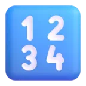
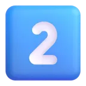
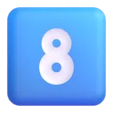

My English World
Book 4 · My Picture Dictionary

Unit 2
Numbers
Tap any picture or sentence to listen.
🖼️ Look and say
one

two
three
four
five
six
seven

eight
nine
ten
▶ Play all words
💬 Words in sentences
I have one nose.
🔊
I have two hands.
🔊
I can see five birds.
🔊
I have ten fingers.
🔊
▶ Play all sentences
‹ Colours
All units
Shapes ›